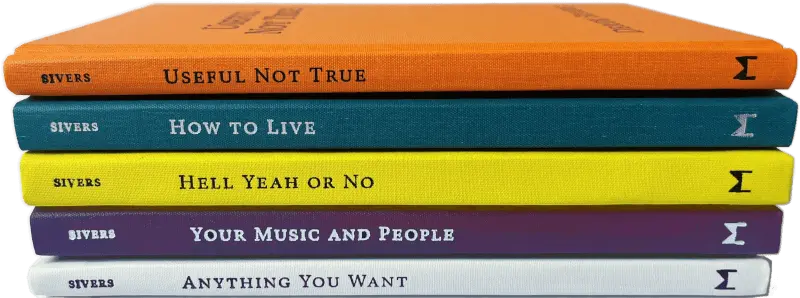
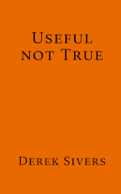
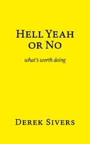
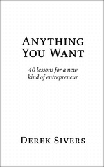

ME IN 10 SECONDS
Xenophile,programmer
, netizen, andconversationalist.
(1984-1997): Musician.Berklee
grad , played 1000+ shows, guitarist for
Ryuichi Sakamoto, wrote and recorded 120+ songs.
(1998-2008):Entrepreneur.
Started and sold
CD Baby. Paid $83M to musicians.
(2009-2025): Author,
speaker. 5
books, 550+articles, some TED talks, guest
on
250+podcasts.
(2026+): ?
See my /about page.
See my /now page.
I like meeting people, and I reply to every email, so say hello.
NEWEST ARTICLES
2026-09-03
Bangalore India hospital flow
2026-08-18
Building without predicting
2026-05-14
Prepare your “no” and keep it handy
2026-05-12
My life was changed by four sentences in four books
2026-05-05
Geography is four-dimensional
… and more here.
MY BOOKS


Useful Not True (2024)
Doubt everything. No beliefs are true. Adopt what works for you
now.
How to Live (2021)
My masterpiece. Best thing I've ever made. My soul in a book.

Hell Yeah or No (2020)
Useful wisdom. Simple profound mental models to guide your
decisions.
Your Music and People (2020)
Get your work to the world by being creative, considerate, resourceful,
and
connected.

Anything You Want (2011 → 2022)
40 lessons for a new kind of entrepreneur. My tales of starting,
building, and
selling CD Baby.
See the foreign publishers of my translated books.
You can listen to over 250 interviews,
where I'm the guest.
Each one has audio, sometimes video, and a full transcript.
PROJECTS
PHOTOS
YOU WANT MORE?!
Try searchSYNDICATED
I also syndicate to: